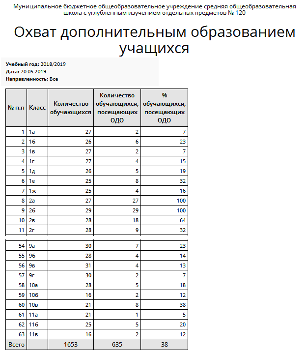

В столбцах отчёта выводятся:
| · | Количество обучающихся
|
| - количество учеников в классе на заданную дату;
|
| · | Количество обучающихся, посещающих ОДО
|
| - количество учащихся в классе, которые зачислены хотя бы в одно объединение (кружок, секцию, группу) дополнительного образования, причём также по состоянию на заданную дату;
|
| · | % обучающихся, посещающих ОДО
|
| - процент, вычисленный по двум предыдущим графам.
|
Пример отчёта:
